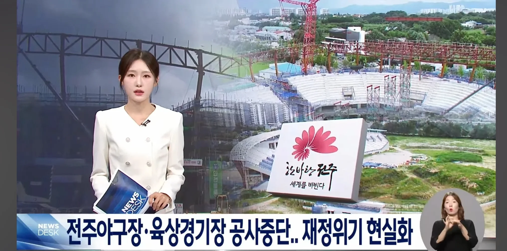
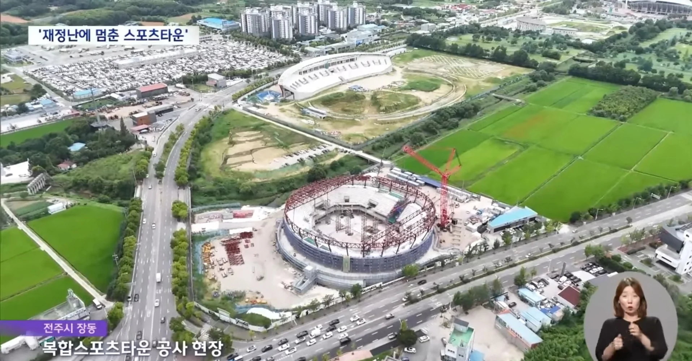
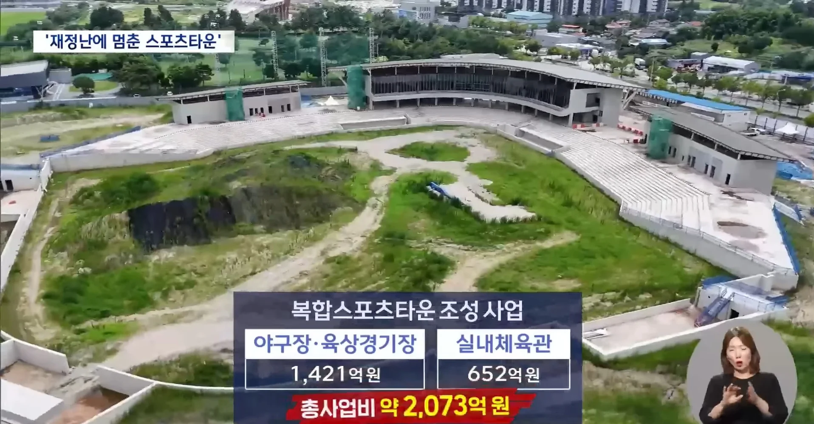
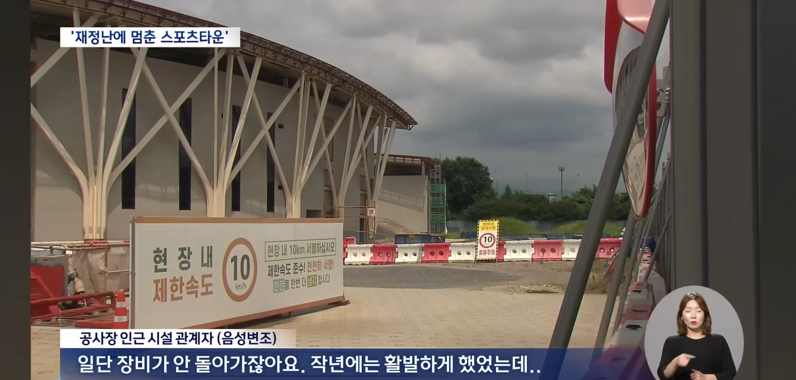
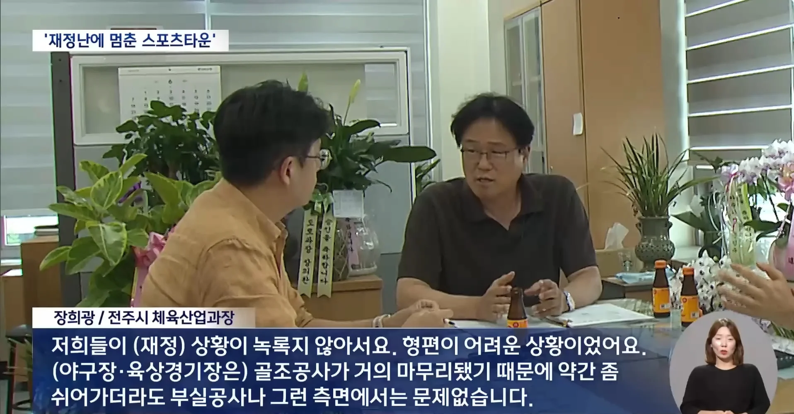
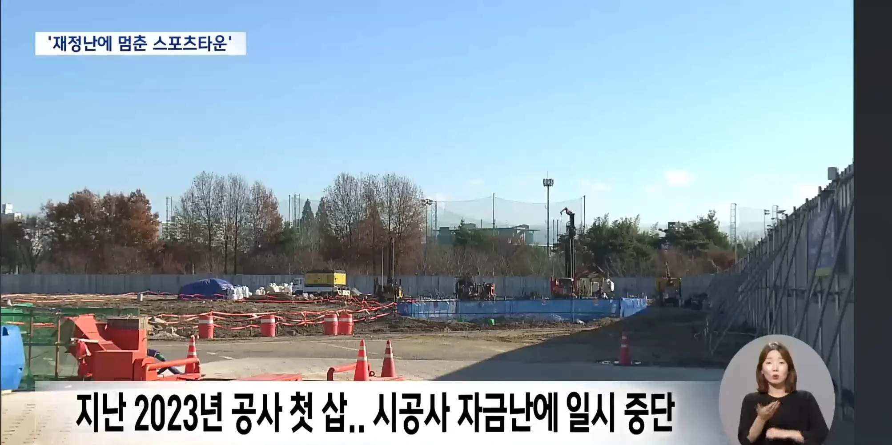
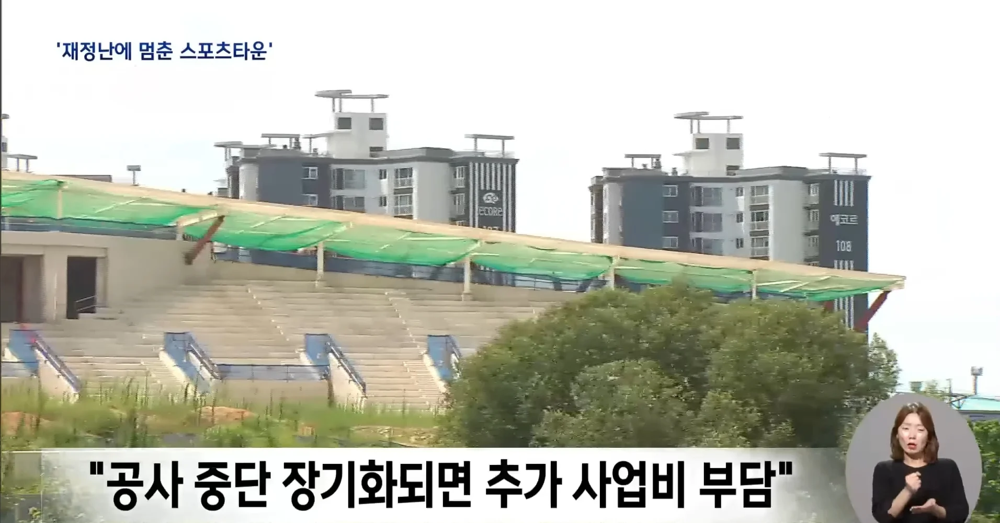
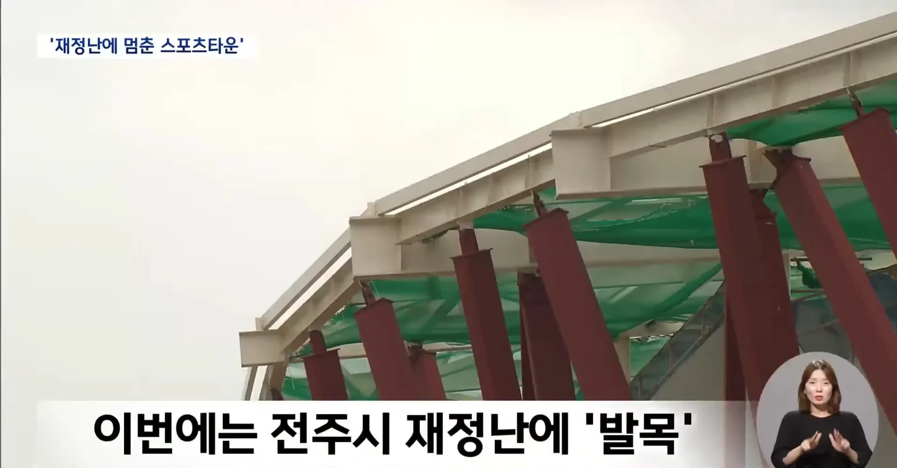
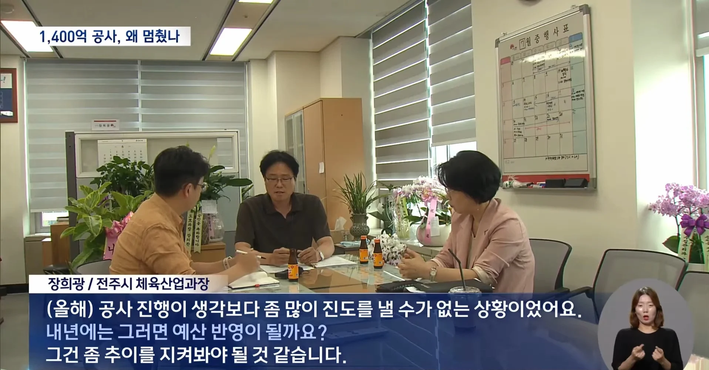
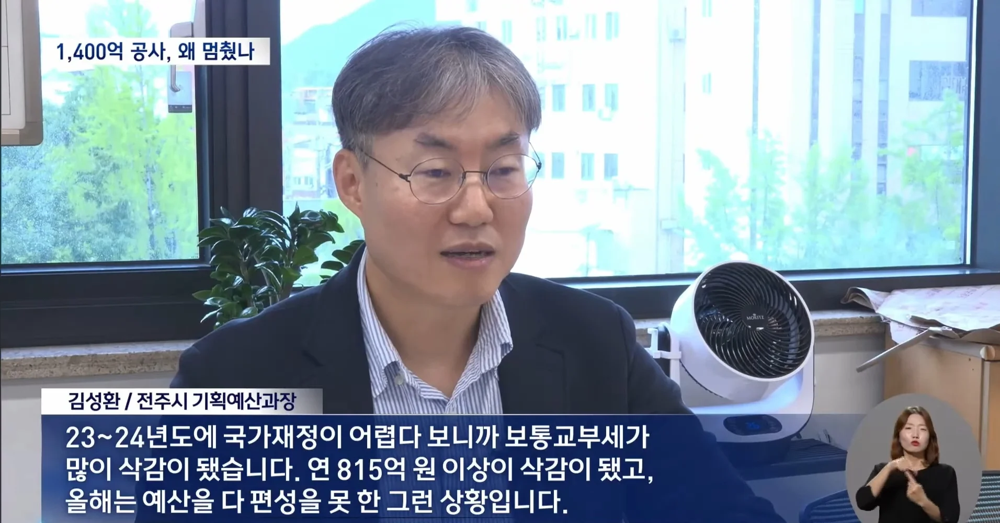
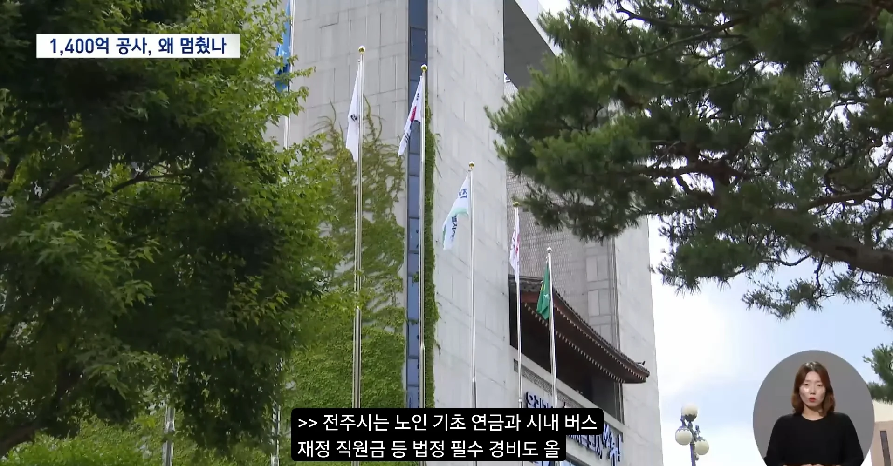
과거 전주시는 프로농구 최고 명문팀인 전주KCC를 개차반 취급하며 전주에 프로야구장 만들겠다고 2천억이 넘는 '스포츠타운 사업'을 추진함
결국 KCC는 부산으로 이전해버리고 프로구단 없는 도시에 프로야구장 짓다가 재정위기 터져서 5월부터 공사중지됨
현재 전주시는 법정 필수경비도 700억 넘게 부족한 상황
한 줄 요약: "야구팀 없는 야구장 짓다 재정위기 터짐"
댓글
수집 당시 댓글 16개
리사쑤 · 2 시간 전
그냥 일을 ㅈㄴ 못함 ㅋㅋㅋ
야생너구리 · 2 시간 전
일터지는거 아닌가싶네 전국에 시 도 들이 다 돈없다고 난리네..
보추암컷타락 · 2 시간 전
전라도가 약간 지방 호족제도 같음
그뢰이재됬냐 · 1 시간 전
그냥 지방이 다 그럼
oneshot · 2 시간 전
이거 내가 썼던 글인데 다시 개드립왔네 ㅋㅋㅋ 전주는 kcc농구, 전북현대 k리그 명문 구단이 2개나 있는데 kcc는 20년 넘은 농구장 방치하는거에 학을 떼며 연고지 이전했고 전북현대 홈구장이 저 야구장 근처인데, 전북현대 홈구장 주차공간도 부족해서 주차장 증설 얘기 나오는데도 안늘리는게 유머임 ㅋㅋㅋ
진보수 · 1 시간 전
들어온다는건 다 나가라그러고, 자기들이 하겠다는건 죄다 말아먹네
마키마의반죽교실 · 1 시간 전
암튼 슈킹은 해야하니까 말 만든거지 뭐
귀여운도야지 · 1 시간 전
다 모가지 쳐내라
일본시골왜노자 · 1 시간 전
병신들.... 법이 문제야. 법 바꿔서 발안한 정치가 공무원이 잡혀가게끔해야함.
SE0UL · 1 시간 전
지방자치제를 없애야한다 ㄹㅇ ㄲㄲ
x0은0 · 1 시간 전
중앙에서 관료를 내려야 한다고 생각하시나요???
실피움 · 1 시간 전
여기 이지스 부산으로 갈 때 전주욕하는 게 더 많지 않았나
x0은0 · 1 시간 전
ㅋㅋㅋ 그래놓고 뭔 올림픽인가 월드컵인가 유치하겠다고? ㅋㅋㅋ
비추누르면대머리됨 · 55 분 전
전주는 앞으로 이번시장 임기동안은 개처망할거임 60만 붕괴되고 59만밑으로 인구 떨어짐 이번시장이 시민단체 출신임 ㅋㅋ 대형마트 휴무집회에서 단식하고 배째라 눕던인물임 전주 탈출은 지능순임 계속 남아있으면 다른 시군에서 받는 혜택은 아예 못받고 지금 거의 1조가까운 빚은 다같이 나눠서 갚아야함 ㅋㅋ 탈출해라 빨리빨리
中出し · 47 분 전
쌍방울 부활!!
통모짜 · 31 분 전
어찌어찌 하겠지 하고 일하는가보네 ㅋㅋㅋ 노답